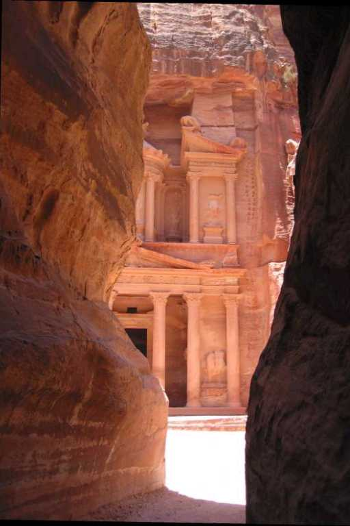
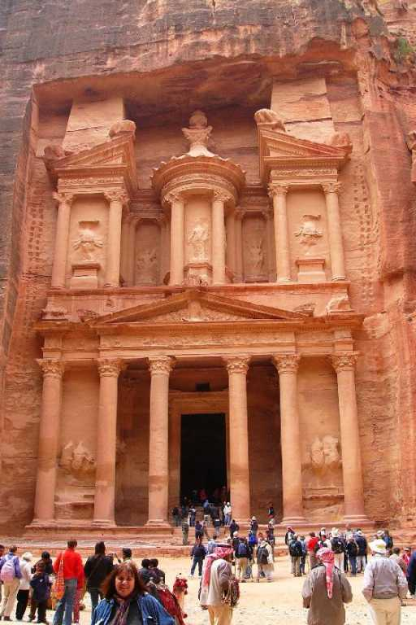
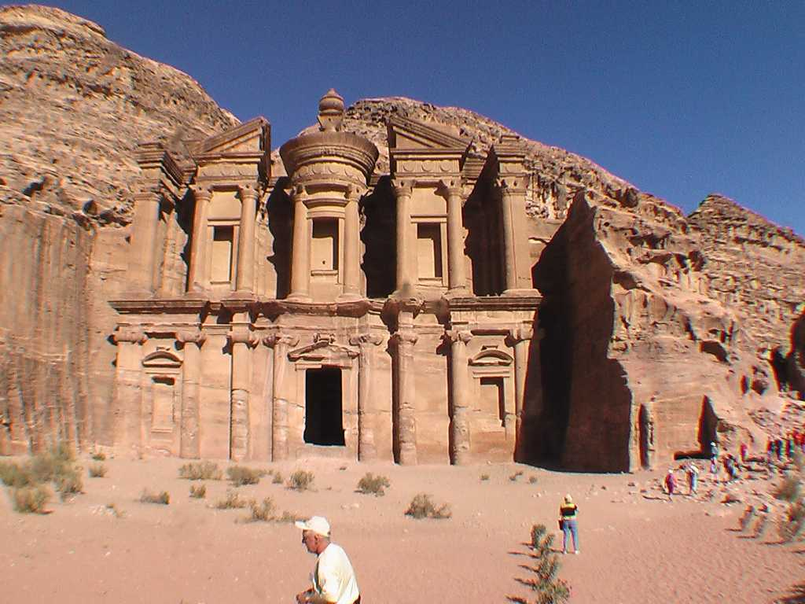
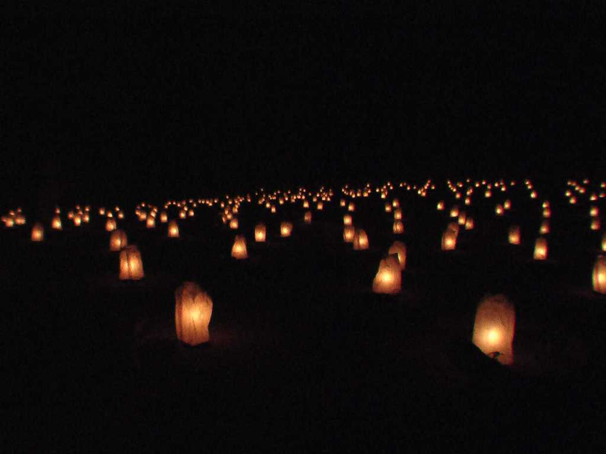

Siq El Khazneh Petra
紀元前３世紀に栄えたシルクロード交易の要となったナバテア人の街でバラ色の都と呼ばれている 長さ１.２ｋｍ幅２ｍ高さ１００ｍの岸壁に挟まれたシク(アラブ語で狭い道)を貫けると高さ４０ｍのバラ色の宝物庫エルハズネが現れその美しさに感動した

Ed Deir
遺跡入り口から６ｋｍ８００段の石段を登った一番奥にある修道院エドディルで高さ４５ｍ幅５０ｍ遺跡最大の建造物である

Night El Khazneh
夜は週２回のナイトツワーにも参加 両側に２０００本の灯篭を灯したシクを含め再び２ｋｍほど歩きエルハズネ前でナバテア人を祖先に持つ遊牧民ペドウィンのショーを観覧 ぺトラ遺跡は２０ｋｍ近く歩く体力勝負の観光でした